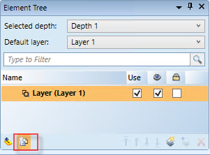
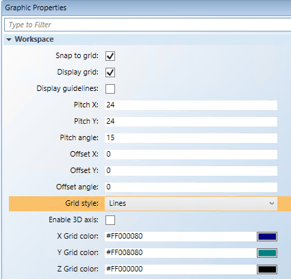

Prepare a Canvas to Draw Pipes
Each time you work in the Graphics Editor, you are engaged in an Editing session. All the basic canvas settings, outside of formatting elements, are retained during this session. When you exit Desigo CC, those settings are not retained and the next time you open the Graphics Editor the default settings are enabled.
- Before you create an image, graphic, or Symbol, it is recommended that you perform the following steps to prepare your workspace in the Graphics Editor.
- You have a graphic open.
- In the Element Tree view, you want to view all elements placed on the graphic.
- Make sure the Element Tree view is visible, and then click Show all Elements .

- On the canvas, you want to use the grid lines to position and work with the elements.
a. Click the graphic, so that the Graphic Properties display in the Property View.
b. Navigate to the Workspace Properties.
- Click the Display Grid check box to view the grid on the graphic.
a. From the Grid Styles drop-down menu, select Lines.
b. You can customize the color (X, Y, and Z Grid Color properties) and size (Offset X,Y, and Z properties).